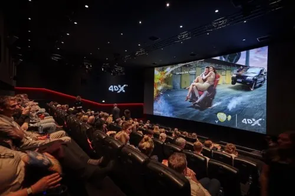
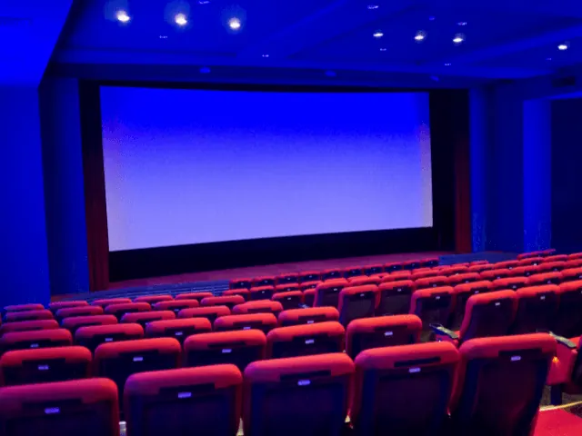

Bioscopen in Nijmegen
Gepubliceerd op 15 december 2022, bijgewerkt op 20 februari 2024
Onderdeel van de gids Musea in Nijmegen

Nijmegen telt drie bioscopen, waarvan twee in het centrum en één in Nijmegen-Noord. Een avondje uit naar een van deze gezellige filmzalen kan goed gecombineerd worden met een hapje en drankje in de bioscoop zelf of de nabijgelegen cafés en restaurants. Elke bioscoop kent een eigen beleving, waar je bij de een geniet van de beste arthouse films, kies je voor de ander voor de warme popcorn in een stoel waar je voeten omhoog kunnen.
LUX- Mariënburg
Wil je onbeperkt genieten van de beste arthouse films en aansluitend aanschuiven in het gezellige café van LUX? Dan raden we je aan om snel te kijken welke vele films er op dit moment te zien zijn in de LUX. 365 dagen per jaar is de LUX in hartje centrum geopend. Niet alleen zie je hier veel films, maar ook theater- dans- en muziekvoorstellingen.
Raak je niet uitgekeken dan bieden ze de mogelijkheid om voor €21,- per maand onbeperkt van films te genieten met de Cinevillepas. Nog geen 30? Dan betaal je maar 17,50.
Vanaf 22 december 2022 wordt LUX één van de theaters waar je een viritual reality ervaring kunt opdoen. Ze hebben een 360 graden VR cinema filmzaal. Hier waan je je op plekken waar je anders niet snel kunt komen.

Pathé Nijmegen
Pathé is er voor iedereen. Ze bieden zo speciale films aan voor 50-plussers en organiseren voor de vrouwen lady’s nights. Er zijn acht zalen, waarvan zaal één een Dolby Atmos met laserprojectie is en zaal acht een 4DX. Je kunt als echte liefhebber al in de ochtend de eerste films zien, tegen een kleinere prijs. De Pathé is makkelijk bereikbaar met het OV en parkeren is gratis.
Filmdiner
Wil je een complete avond of middag uit van maken, kies dan voor een van de combideals. Bij Pathé Nijmegen kun je kiezen uit twee restaurants. Je kan daar telefonisch reserveren en aangeven dat je gebruik wilt maken van het Pathé Filmdiner. Je film reserveer je via de reserveerlijn van Pathé en bij het restaurant geven ze je een voucher mee die bij de bioscoop kan worden ingeleverd.
Restaurant Moeke
Naast Pathé Nijmegen vind je restaurant Moeke. Een hippe tent aan het strandje van Nijmegen-Lent. Hier kun je heerlijk na dromen over de film die je gezien hebt. In de zomer raden we je aan om je zwemspullen ook mee te nemen. Zodra je lekkere trek krijgt of zin in een ijskoud biertje, staat de altijd vriendelijke club van Moeke voor je klaar.
Pathé unlimited
Wil je onbeperkt naar de film? Dat is geen probleem. Voor €21,- per maand mag je onbeperkt naar alle reguliere films. Je krijgt hierbij ook nog korting op een hapje en een drankje. Hou jij van special effects? Dan is het slimmer om een Pathé unlimited gold abonnement te kiezen. Hierbij kan je in Nijmegen ook naar de Dolby cinema en 4DX-films.

Vue Nijmegen Walstraat
De VUE in Nijmegen is een bioscoop waar je heerlijk achter over kunt leunen in de luxe stoelen. De zalen zijn niet al te groot, waardoor je een knusse sfeer ervaart. Waar je in de LUX en bij de Pathé geen pauzes in de film hebt, krijg je bij VUE wel de tijd om tussendoor naar het toilet te gaan of een lekker speciaal biertje van de tap te halen.
Dinner & Movie
Wil je er een complete avond uit van maken? Dan heeft de VUE Nijmegen goed nieuws! Ze werken samen met Humphrey’s Nijmegen en de Dromaai. Je maakt een reservering bij het restaurant en krijgt vervolgens een filmvoucher mee die je aan de kassa of online kunt inwisselen. Natuurlijk wil je wel zeker zijn van een goede plek, bij de gewenste film. VUE vraagt daarom om via de telefonische reserveringslijn aan te geven met hoeveel personen je komt, naar welke film en in welke rij je wenst te zitten.
Humphrey’s nijmegen
Als je de straat van de VUE uitloopt, dan loop je bijna tegen Humphrey’s aan. Een eigentijdsrestaurant met de sfeer van een klassiek café uit Parijs. hier kunt je bourgondisch genieten. Ze hebben een bioscooparrangement voor €42,50. Hiervoor krijg je uiteraard je bioscoopvoucher en geniet je van een 3-gangenmenu.
De Dromaai
Wil je iets minder bourgondisch dineren, voor een vriendelijke prijs, raden wij je aan om aan te schuiven bij de Dromaai. Voor maar €23,50 krijg je een bioscoopvoucher, een stokbroodje vooraf en een hoofdgerecht naar keuze. Daar hoort ook een drankje bij, waarbij je mag kiezen uit: koffie, fris, een biertje of wijntje. Je kunt deze Dinner & Movie-bon ook cadeau geven. Elke dag vanaf 12:00 zijn de avondjes-uit bonnen verkrijgbaar aan de bar.